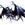

| B s . A A A | full 3/4 1/2 | E E | Light Dark |
|

Tamphis
Author of 9 Stories |
Honor and Vengeance: a tale of two souls
Disclaimer: I disclaim. Does that count? No? Ummm… How about, I don't own Ah! My
Goddess! Or Ranma ½, nor do I claim to. Therefore, I disclaim.
Chapter 4
All is not right with the world…
"You! I challenge you for the right to Ranma!"
Hiko arched an eyebrow, and smiled. It was not a pleasant smile, more like the ones that a shark gives a surfer, or the one that a snake gives to a bird just before devouring it. The smile chilled the souls of everyone viewing it, but seemed to have no effect on Akane. The fact that the woman was simply smiling at her gave Akane's self-righteous state a bit more fuel, and she decided to really bone herself.
"Unless, of course, you're scared to fight me. I mean, I would be, too, if it were me there."
Hiko's smile had gone from simply chilling to progressively more and more animalistic as Akane's tirade wore on.
"Really? Fight YOU? You want to challenge me for my husband? You want me to stoop to your level and treat him like an object to be bartered? You want me to give up the MAN I LOVE to appease your EGO?" Hiko was getting angrier and angrier at each word, and had gone from sitting calmly to standing in fury.
"Well then let's get this party started, AKANE NO BAKA!" In a sort of bizarre twist, Hiko whipped out an ebon black War hammer and slammed Akane into the floor with it.
WHAM!
"That was for NEVER listening!"
SLAM!
"That was for Taking Ryoga's side without even thinking!"
SPLAT!
"Force-feeding us that sludge you called food!"
SMASH!
"Calling us pervert! When YOU were always walking in on US!"
CRASH!
"Acting like everything was our fault when everyone around us was the actual cause! WE were the unfortunate victims here, not YOU!"
"That's enough, Ko-chan. Any more of that and you'll kill her."
What was left of Akane was a purple-blue colored bruise with short black hair embedded in the ground. She wasn't bleeding, but was barely hanging on to consciousness and could almost make out Hiko's face. The absolutely demonic snarl on the beautiful woman's face was the last thing Akane could see, and just before blacking out, she heard a few words.
"Your pain is only beginning, Akane Tendo. We WILL play again soon, I'm sure."
The rest of the crew sat in obvious shock at the brutal display of violence, although the remainder of the former-fiancé brigade thought it was about time that Akane got knocked down a peg or two.
Ryouga was the first to recover, and screamed in fury.
"Ranma! How dare you do that to Akane!"
Soun, Genma, and Kuno, all of which were getting ready to use various and assorted techniques to attack with, backed him. Just as violence was about to erupt, Ranma said four words.
"Sit down, shut up."
And, amazingly enough, it worked. All four of them looked as if their view on life had taken a sudden twist for the bizarre. Ranma, defending himself? Without using his fists? Amazing!
"Okay, first of all, Hiko did that, not me. Secondly, Akane's had that and more coming for almost two years now; and don't try and tell me I'm wrong, we all know that it's true. More to the point, though, is this: I have had it with all of you, I really have. I used to think that some of you were friends, rivals maybe, but friends none the less. It occurred to me while I was away that almost all of you hate me for some insanely stupid reasons. "
Ranma turned and looked Ryouga straight in the eye.
"I waited for you, Ryouga, and I would have been there on your oh-so-important fourth day, if Genma hadn't knocked me out and drug me off. I never forced you to follow me to Jusenkyo, and I never revealed your secret. All I tried to do was keep you dishonoring yourself and you blamed me for it. All I ever tried to do was extend the hand of friendship to you in the only way I knew how, with the taunts and teasing. And you hate me for it. And now, I hate you for it as well. But more than that, I hate myself for letting you make me hate you. We're through, Ryouga. One more offence, random attack, or attempt to blame me for your problems, and my vow is broken, understand?"
Without pause, Ranma turned to the fathers and began the next part of his speech.
"As for you two, Akane and I MIGHT have gotten somewhere, if the two of you hadn't been constantly interfering. But, at every turn, there was another scheme, another reminder of the engagement, another fiancé, Genma! But through all of that, I remained true to Akane. Despite her protests to the contrar and her baseless accusations. Throughout all of the craziness, I never once betrayed any of the girls by choosing any one of them. And all of that is the fault of you two drunken morons! Now, I do believe that there are several warrants for your arrest, both of you, and if I hear one more thing about marrying a Tendo, I will let the police know exactly where to find you both, are we clear?"
Seeing the moronic duo begin to puff up, Ranma let a little of his power trickle into his voice.
"I said, ARE WE CLEAR?"
Energetic nodding answered him.
Ranma turned and looked at Mu Tsu next.
"Mu Tsu, I never loved Xian Pu, I barely liked her. Had things been slightly different, I could have loved her. BUT: she used ever dirty, sneaky, underhanded trick in that very large book of her and Ku Lon's to ensure that never happened. And now, I hate her just as much as I hate the rest of you. I was never an obstacle to your happiness, Mu Tsu, she was. "
Ku Lon spoke next, and her voice was heavy with age.
"Son-, No, Ranma. I would like to know what exactly happened to you to bring about such a revolution in your mind. Where have you been, how did she come to be, and why do you have no Ki?"
Hiko smirked a little.
"So, you weren't paying attention earlier when Ma-chan explained things? He told you exactly what happened to us then."
Ku Lon looked a little chagrined.
"Well, miss, I was hoping that I'd misheard, or Ranma was having us on, or something similar."
"Sorry, elder, everything I said is true. Besides, Gods can't lie. It's against THE RULES." Ranma responded.
"I can," Hiko piped up, "but I don't. It's too hard to keep up with who you've told what to. Besides, as Nabiki already knows, it's not what you say, but how you present it that makes the biggest effect. Right, 'Biki-chan?"
Nabiki smirked and gave a nod.
"So… what are THE RULES, if I might ask."
"Guidelines that govern how Gods and Devils interact on the mortal plane, with each other, and with mortals like the rest of you. Mostly, it's about how much of the TRUTH we can let slip." Ranma said.
"So… what is this TRUTH?"
"Are you really certain that you want me to answer, Elder Ku Lon? The very knowledge might destroy your mind." Hiko smirked like the cat that ate the canary, drank the cream, knocked over the trash, framed the dog, and came out completely blameless.
Seeing that Ku Lon was eagerly nodding her head, the happily wedded couple decided to humor her request, and tell her the TRUTH. As one, Ranma and Hiko moved over to flank the tri-centurial elder and leaned over a shoulder each, whispering every good or evil thing that she had done in her life, and whether or not it was a "good thing" from the point of view of the eternal balance.
For the first minute, Ku Lon was able to withstand it, with nor apparent ill effects. After that, and with each progressive minute, her eyes got a little wilder, and her mind slipped a little more, until Ranma and Hiko decided that enough was enough and stopped whispering to her.
Ku Lon let out a maniacal giggle and fell over, dropping her cane in the process. Upon hitting the ground, she began rolling from side to side, giggling and mumbling absolute nonsense.
It was decided, universally, it seemed, that it was quite late (8:30 pm), and that perhaps things would be better if they tried to resume in the morning. Everyone left, with the exception of the residents and Saotome guests, of course, and thought over what revelations the day had brought.
Well, everyone except Ku Lon, she was still mumbling about baboons in g-strings.
Trust me, you don't want to know.
Xian Pu did, however, have thepresence of mind to collect her multiple-times great grandmother and return to the Cat Cafe with her.
Meanwhile, back at the Tendo home and Dojo/potential temple site, Kasumi was torn between being happy for Ranma and Hiko, and being upset that she had hit Akane. No matter how much she had deserved it. And to think, they had driven poor elder Ku Lon mad! Why, that wasn't very nice at all, no matter how irritating the old biddy might have been.
Perhaps she should ask Ranma and Hiko to be a little nicer in extracting their justice and/or revenge in the future? There were alternative to torture, after all.
Firming her resolve, Kasumi walked into the room that Ranma and Hiko were sharing, only to stop short as she saw both of them in a very intimate position. Aside from the fact that Hiko had no proof to her hair color, there was a very nice tattoo of a snake that wrapped from her nether regions around her hips and back down the other side. That and apparently Ranma-kun fit his name very well.
"Oh… oh, my..." Was it warm in there?
"Hrmm, Ko-chan, it appears that we have an audience." Ranma murmured to Hiko.
"Mmmm, do that again, anta... Kasumi, was there something you wanted? To join in, maybe? I wouldn't mind, would you, Ma-koi?"
"Hnnn… nope, not me, Ko-chan… how about it, Kas-chan? Want to jump in?"
Kasumi flushed a deep red and stammered out an apology before hastily exiting the room, completely forgetting what it was she wanted to say. But she had very, very good dreams that night.
The next morning dawned with the shrieking of a damned soul finally realized its own demise as Genma attempted to punt Ranma out the window in order to subdue, I mean train, his son in the art of unarmed combat.
However, the previously mentioned son, or more precisely his wife, was having none of that, and administered an appropriate, to her mind, corrective measure. She pumped about 10,000 volts of demonically enhanced electricity through him on his way out the window.
The day continued from there in the same slightly surreal manner as the previous one had, meaning that the usual morning shenanigans was either absent or swiftly halted. On a side note, Kasumi had a slightly silly edge to her normal smile and breakfast was about five minutes later than usual. However, things swiftly came to a head when Ranma set down his bowl and cleared his throat.
"Hiko and I will be going to school, at least for the next few months, in order for the both of us to complete high school before moving on to our normal work. We'd like to keep living here, but there need to be changes made here, for the better of both families; and they need to be adhered to. Are there any questions, so far?"
Akane, being the blockhead that she is, opened her mouth and proceeded to stuff her knee in it.
"What makes you think that you have any right to order my family around, jerk? Last time I checked, the only reason you were here was that stupid join the schools pledge!"
Ranma gave her a long look before glancing to his left, where Hiko sat.
"Dear, if you would?"
Hiko pulled out the same hammer that had been used the night before and smirked at Akane in a "go ahead and try something" manner.
"As an answer to your question, Akane," he began, "My recent elevation to godhood gives me the right. Having the favor of both the heavens and the hells is a very, very good thing for any mortal family, and entire wars have been fought in order to obtain this favor. Additionally, my sphear of influence give me the right; considering introduced myself last night as a GOD OF HONOR! These changes are what are needed in order to help your family, Akane. Keep in mind that we just want to help the families, and everything we're going to say is to the betterment of them. Not the schools, but the families. Like I said, both families have the favor of both sides, and all it takes to lose that favor is one arrogant action by a mortal. Think on that for a moment."
"To continue; Soun, you'll need you to start teaching again. It's not right, just, or honorable to depend on your daughters to support you, emotional loss or no. If you like, I'll help you get back into shape first, but this needs to happen. Next, Kasumi needs to go to college, even if only for one class per day. She needs social interaction with people her own age, and its better that she get it from college than, say, a seedy bar on a grimy street corner where punks like to hang out. Take whatever classes you like, Kasumi, Ko-chan and I will pay for them until the dojo gets solvent again. Nabiki, you need to put a stop the racketeering and blackmailing at school. It has endeared you to some of Ko-chan's co-workers, and I think you know what that means. The best choices we can think of for you to turn your talents towards, at least until after you graduate, is either matchmaking or guidance counseling. Heck, with the proper degree, any business would be happy to have such a sharp mind on its staff, but not if you carry a reputation for shady dealings."
Ranma took a sip of his tea, looked at Akane, and sighed.
"Akane, you really need to go and get some counseling. Figure out what the cause of your anger is and why it blinds you so. Also, figure out where this obsession you have with perversion comes from and fix it. You're a very sweet young woman when you try to be, but you don't try often enough. Therein lays the problem, your better nature peeks out and causes people to become infatuated with you, but then the whole 'bash first, ask never' attitude comes out. This is what causes men like Kuno to become obsessed with you, and is part of the reason for the morning mobs. Think on that for a while, please."
Ranma resumed eating while Hiko spoke up.
"Genma, You need to move back in with mother, I know that she loves you and misses you terribly at night, but if you stay here, than all you'll end up doing is hurting her more. If you want to help Tendo-san teach, that's fine, but the first thing you need to do is go be with mother. At any rate, should you decide to help Tendo-san teach, please remember that the students are not us, and cannot take the same training that we withstood. Fail in that, and prison will be the last of your worries. This is your final chance, Genma. Mess it up, and some of my co-workers have been waiting ages to get a hold of you. The end result will not be pretty or funny in the least. Now, Ranma and I had better get moving, and so should you and Akane, Nabiki. Thank you for breakfast, Kasumi. La~ter!"
With that, and a parting wave, both Ranma and Hiko shifted their clothes into a Furinkan High uniform and strode out the door. Well, Ranma's was an approximation of the standard Furinkan uniform, but it was tailored in silver silk and hugged his frame in all the right ways. Hiko's may have at one point in time been a Furinkan girl's uniform, but somewhere it lost most of the length in the skirt, all of the poof in the blouse, and they probably aren't supposed to be worn with platform stiletto-heeled Mary-Janes. Nor is the skirt supposed to be made of black vinyl, or the blouse an off-silver color.
Furinkan would never know what hit it.
Authors ranting corner:
Thank you for taking the time to look over the second coming of this story. A while back I promised to blow the dust off of a bunch of my old fics and see about polishing them up, so I started with the second fic I ever actually sat down and put some thought into. Ta-Da!
At any rate, I hope you've enjoyed the revisions, and I hope that you'll take the time to review this offering. Thanks again!
-Tamphis

|
Review this Chapter |